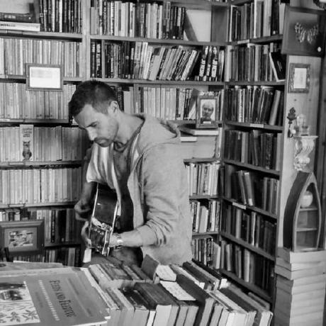
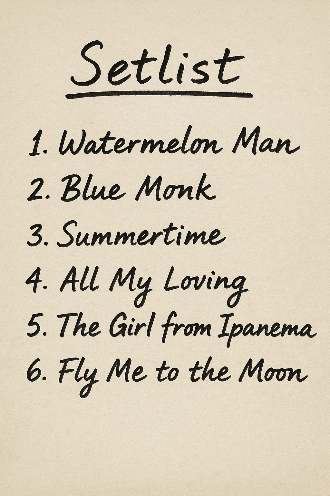

About Me

Steve — Live in the Library
Hi, I'm Steve — a passionate Jazz/Blues/Modern guitarist based in Weston-super-Mare, Somerset. Though relatively new to the scene, I bring solid experience from live gigs across the UK, delivering versatile performances full of soul, tones, and energy.
Whether it's an intimate jazz night, a vibrant afternoon cafe, or a private event, I adapt my style to fit the mood — blending classic jazz standards with fresh, original sounds. I'm also available for acoustic and solo sets featuring Britpop favourites and classic band anthems, perfect for getting the energy up and the crowd singing along.
Over the past few years, I've honed my craft through live performances across Somerset and beyond — from mellow cafe sets to upbeat outdoor gigs. Every show is an opportunity to create atmosphere — whether that means gentle, melodic background or high-energy improvisations with a groove-focused band.
My playing is influenced by the harmonic richness of Wes Montgomery and George Benson, the lyricism of Jim Hall, and the exploratory nature of modern jazz artists. But above all, I aim to connect — through tone and timing.
From bebop grooves to Britpop bangers, my setlist is flexible and tailored to your venue's vibe. Let's create an unforgettable musical experience together.
Prefer longer sessions, lessons, and full jam performances?
Live Jazz Performances by Steve — Guitarist in Weston-super-Mare
Enjoy live jazz and instrumental guitar from recent gigs and jam sessions across Somerset and beyond.
What a Wonderful World — Home Jazz Jam
Blue Monk — Live Session
When I Fall in Love — Late Night Jazz
Upcoming Gigs & Jam Sessions
- 28th October 2025 — TikTok Live: Jazz Licks & Warmups — Short session focused on beginner jazz licks and soloing. 8 PM BST.
- 4th November 2025 — TikTok Live: Jazz Standards — Solo playalong and tips on classic jazz standards. 8 PM BST.
- 11th November 2025 — TikTok Live: Latin Jazz Jam — Explore Latin rhythms and improvisation. 8 PM BST.
- 18th November 2025 — TikTok Live: Bebop Improv — Fast runs, arpeggios, and bebop ideas for solos. 8 PM BST.
- 25th November 2025 — TikTok Live: Lo-Fi & Chill Jazz Session — Smooth grooves and ambient vibe. 8 PM BST.
Setlist Highlights

Highlights from a recent live session — real jazz, real vibes.
Get in Touch
If you're planning an event, looking for a guitarist, or just want to talk jazz, I'd love to hear from you. I'm available across Weston-super-Mare, Bristol, Bath, and surrounding areas. Use the form below to reach out directly — no agents, no intermediaries.
Find Me in Weston-super-Mare
Catch a live jam, grab a coffee, or just say hi! Here's where I'm usually playing.